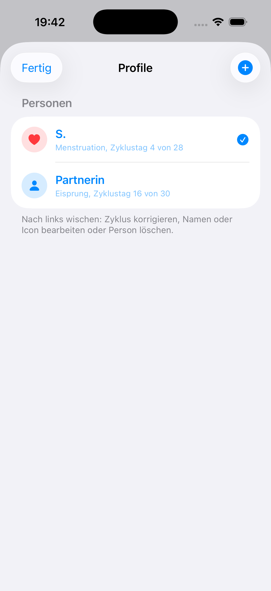

Heute auf einen Blick.
Zyklustag, aktueller Abschnitt und respektvolle Alltagshinweise in einer ruhigen Übersicht.
Dokumentiere deinen eigenen Zyklus oder begleite eine nahestehende Person respektvoll – privat und lokal auf deinem iPhone.

Heute verstehen
CycleContext übersetzt einen geschätzten Zyklusstand in verständlichen Kontext. Du siehst mögliche körperliche Veränderungen, Hinweise für den Alltag und kommende Abschnitte – ohne Gefühle oder Verhalten vorherzusagen.
Zyklustag, aktueller Abschnitt und respektvolle Alltagshinweise in einer ruhigen Übersicht.
Kommende Abschnitte ansehen und die kalendarische Schätzung bei Bedarf korrigieren.
Persönliche Beobachtungen und offen geäußerte Bedürfnisse haben immer Vorrang.
Einträge und Notizen ergänzen die Schätzung – mit dem, was wirklich ist.
Sauber getrennt, mit eigenem Zyklus und eigenen Einträgen.
Orientierung statt Schablonen
Die App erklärt mögliche Zusammenhänge. Sie sagt nicht voraus, wie sich eine Person fühlen oder verhalten wird.
Ziehe den Punkt durch den Zyklus
Die Gebärmutterschleimhaut wird abgestoßen. Blutung, Krämpfe oder Müdigkeit können belasten – müssen es aber nicht.
Im AlltagDas persönliche Befinden entscheidet, ob Ruhe, Bewegung oder Unterstützung guttut.
Follikel reifen, der Östrogenspiegel steigt. Manche erleben in dieser Zeit wieder mehr Energie.
Im AlltagEin guter Moment, gemeinsame Pläne abzustimmen – ohne Erwartungen daran zu knüpfen.
Rund um diesen Zeitraum könnte ein Eisprung stattfinden. Die App zeigt dafür nur eine vorsichtige kalendarische Schätzung.
WichtigNicht zur Verhütung oder Fruchtbarkeitsbestimmung geeignet.
Progesteron steigt und der Körper stellt sich um. Veränderungen bei Schlaf, Appetit oder Temperatur sind möglich.
Im AlltagBeobachtungen zu notieren hilft, eigene Muster besser zu erkennen.
Vor der nächsten Blutung können Beschwerden wie Spannungsgefühle oder Kopfschmerzen auftreten. Bei vielen bleibt diese Zeit unauffällig.
Im AlltagBeschwerden einordnen, ohne sie vorauszusetzen – und lieber einmal mehr nachfragen.
Beispiel mit 28 Tagen. Jeder Zyklus ist anders – in der App kannst du die Schätzung jederzeit anpassen.
Persönlich und getrennt
Dokumentiere deinen eigenen Zyklus, halte Beobachtungen fest und sieh, was in den kommenden Tagen ansteht.
Verstehe, was gerade los sein könnte – und frag lieber nach, statt zu vermuten. Profile bleiben sauber getrennt.

Privat by Design
Profile, Zyklusdaten und Einträge bleiben in der aktuellen Version lokal auf deinem iPhone. Es gibt keinen Account und keine Synchronisierung mit einem eigenen Server.
Kein Konto, keine Synchronisierung mit einem eigenen Server. Reguläre iPhone-Backups können App-Daten enthalten.
Daten einer anderen Person nur erfassen, wenn sie davon weiß und einverstanden ist – am besten mit Spitznamen oder Kürzel.
Einzelne Profile samt Einträgen kannst du jederzeit löschen. Löschst du die App, werden auch die lokal gespeicherten App-Daten entfernt.
Ein Blick in die App


Jetzt verfügbar
Auf iPhone und iPad sieben Tage vollständig ausprobieren – ohne Zahlungsangabe. Die Testzeit beginnt erst, wenn du sie in der App startest.
Im App Store ladenHäufige Fragen
CycleContext dient der allgemeinen Information, persönlichen Dokumentation und Alltagsorientierung. Die App ist nicht für Diagnose, Behandlung, Verhütung oder Fruchtbarkeitsbestimmung bestimmt. Bei starken, ungewöhnlichen oder anhaltenden Beschwerden sollte medizinischer Rat eingeholt werden.
Nein. Du kannst deinen eigenen Zyklus dokumentieren oder eine nahestehende Person respektvoll begleiten.
Nein. Die App bietet kalendarische Orientierung und allgemeine Informationen. Das tatsächliche Befinden und persönliche Beobachtungen haben Vorrang.
In der aktuellen Version bleiben Profile, Zyklusdaten und Einträge lokal auf deinem Gerät. Es gibt keinen Account und keinen eigenen Server-Sync.
Nein. Du kannst direkt nach dem Öffnen der App loslegen – ganz ohne Registrierung.
Nein. Das Eisprungfenster ist nur eine kalendarische Schätzung. Die App ist nicht zur Verhütung oder Fruchtbarkeitsbestimmung geeignet.
Du kannst CycleContext auf iPhone und iPad sieben Tage vollständig ausprobieren – ohne Zahlungsangabe. Die Testzeit beginnt erst, wenn du sie in der App startest.